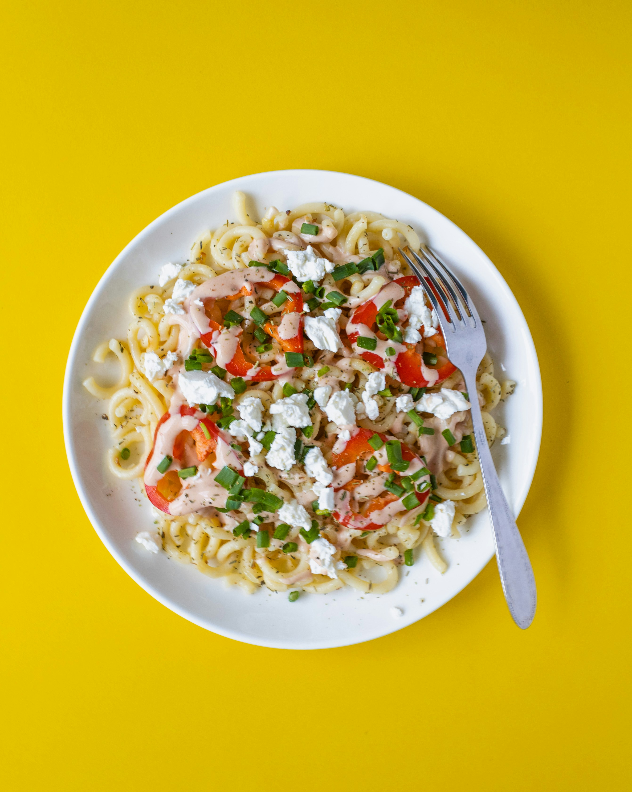

Feta Salmon Pasta
Home

Feta Salmon Pasta
This is a delicious pasta dish made with feta cheese and salmon. Perfect for a quick and tasty dinner!
Ingredients
- 200g pasta
- 150g feta cheese
- 200g salmon fillet
- 1 clove garlic
- 2 tbsp olive oil
- Salt and pepper to taste
Steps
- In a baking dish, add your salmonf filet, block of feta, clove of garlic, and drizzle with olive oil.
- Bake in the oven at 375°F for 30 minutes.
- Remove the baking dish from the oven.
- Squeeze the roasted garlic out of the skin
- Mix until all ingredients are combined.
- Add in your pasta cooked according to the package instructions and mix well.
- Serve and enjoy!